UNIVERSIDAD TECNOLOGICA DE HERMOSILLO
Ingenieria en Desarrollo y Gestion de Software
MATERIA:
Desarrollo Web Profesional
DOCUMENTACION DEL PROYECTO:
MedSchedule
Publicacion, seguridad y liberacion de una aplicacion web
Mtro. [Nombre del docente]
Presenta:
[Foto + Nombre del integrante 1]
[Foto + Nombre del integrante 2]
[Foto + Nombre del integrante 3]
Grupo:
[IDGS__-__]
Hermosillo, Sonora. Marzo, 2026.
Indice de contenidos
0. Portada con foto de los integrantes (reemplazar los placeholders con las fotos reales). 1
Indice de contenidos 2
1. Configuracion de dominio 3
2. Certificados de seguridad (Let's Encrypt) HTTPS 4
3. Publicacion de la aplicacion web y evidencias para liberacion 5
4. Funcionalidades minimas operando por integrante 7
5. Pull Request / Merge Request por integrante 8
7. Sistema de logueo, registro y reseteo de password 10
8. Rol de Superadministrador: CRUD de usuarios y panel de logs 11
9. Actualizacion de perfiles de usuario 12
10. Issue de implementacion RBAC con UI 13
11. Funcionalidades principales adicionales de entrada y salida 14
12. Grafica o chart con datos reales de DB 15
13. Busqueda con debounce y campo dependiente en tiempo real 16
14. Pruebas unitarias, pruebas automaticas y code coverage 17
15. Tag de release estable y URL del repositorio 19
16. CI/CD con GitHub Actions o Jenkins 20
17. Conclusiones, expansion, recomendaciones y problemas 22
1. Configuracion de dominio
En esta seccion se documenta el mecanismo utilizado para exponer MedSchedule al publico general mediante una URL publica y accesible desde redes externas. Si no se dispone de dominio propio, se puede usar un DDNS (No-IP, DynDNS), ngrok, GitHub Codespaces, DomCloud o cualquier plataforma equivalente que permita acceso publico.
1.1 Estrategia seleccionada
Opcion elegida: [Dominio propio / DDNS / ngrok / Codespaces / DomCloud]
URL publica final: [https://tu-dominio-o-subdominio]
Proveedor del servicio: [Proveedor]
Fecha de configuracion: [dd/mm/aaaa]
1.2 Configuracion aplicada
Registro DNS o tunel configurado: [A / CNAME / Tunnel / Proxy]
IP publica o endpoint origen: [Dato tecnico]
Puerto o servicio publicado: [80 / 443 / reverse proxy]
Comandos o pasos ejecutados: [Resumen breve]
1.3 Evidencia requerida
Captura del panel DNS, DDNS o tunel activo.
Captura del sistema abierto desde una red externa o navegador en modo incognito.
Captura de la URL publica funcionando desde un dispositivo distinto al entorno local.
2. Certificados de seguridad (Let's Encrypt) HTTPS
La publicacion del sistema debe operar sobre HTTPS con un certificado valido. La recomendacion es usar Let's Encrypt mediante Certbot, panel del hosting o un proxy administrado que emita y renueve automaticamente el certificado.
2.1 Datos del certificado
Metodo de emision: [Let's Encrypt / hosting / proxy]
Dominio cubierto: [dominio o subdominio]
Fecha de emision: [dd/mm/aaaa]
Fecha de expiracion: [dd/mm/aaaa]
2.2 Configuracion de seguridad
Redireccion HTTP a HTTPS: [Si / No]
Renovacion automatica habilitada: [Si / No]
Puerto 443 activo: [Si / No]
2.3 Evidencia requerida
Captura del candado del navegador.
Captura del detalle del certificado emitido.
Captura de la redireccion desde HTTP hacia HTTPS.
3. Publicacion de la aplicacion web y evidencias para liberacion
La publicacion debe documentarse a partir del caso de estudio planeado y considerando las pruebas necesarias antes de liberar una version estable. Esta seccion resume entorno, evidencia incluida y totales de pruebas o validaciones ejecutadas.
3.1 Caso de estudio
Nombre del sistema: MedSchedule.
Objetivo del despliegue: publicar una plataforma web para gestion de citas medicas con roles diferenciados y acceso publico controlado por HTTPS.
Entorno de produccion o preproduccion: [Servidor / hosting / VPS / Codespace / tunel]
3.2 Resumen de liberacion
Version liberada: [vX.Y.Z]
Fecha de liberacion: [dd/mm/aaaa]
Commit base: [hash]
Rama base: [main / develop / release]
3.3 Evidencia incluida
Acceso publico al sistema.
Captura del login o landing en produccion.
Captura de HTTPS activo.
Captura de modulos principales operando.
Captura de pruebas manuales y automaticas.
3.4 Totales para liberacion
Pruebas manuales ejecutadas: [total]
Pruebas unitarias backend: [total]
Pruebas unitarias frontend: [total]
Pruebas automaticas Selenium IDE: [total]
Defectos criticos abiertos al liberar: [0 / numero]
Tickets cerrados incluidos en la liberacion: [total]
4. Funcionalidades minimas operando por integrante
Cada integrante debe exponer las funcionalidades minimas que desarrollaron y demostrar su operacion con ticket o tarjeta asociada. A continuacion se agregan los issues implementados y la evidencia visual de las pantallas desarrolladas en el sistema.
4.1 Tickets implementados y URL de seguimiento
Issue #21: [feat]: implementar UI de gestion de roles y permisos RBAC
Issue #26: [feat]: implementar vista de agenda del doctor
Issue #36: [feat]: implementar vista de CRUD de especialidades medicas
Issue #37: [feat]: implementar vista de gestion de horarios del doctor
Issue #40: [feat]: implementar vista de perfil profesional del doctor
Issue #42: [feat]: implementar vista de panel de logs de actividad
4.2 Evidencia visual de pantallas implementadas
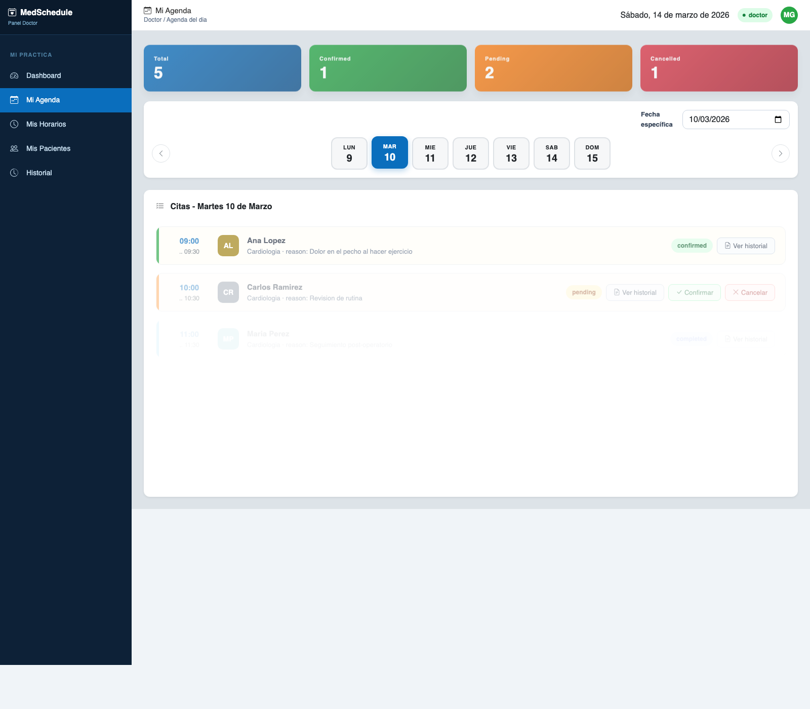
Figura 1. Vista de agenda del doctor relacionada con el issue #26.
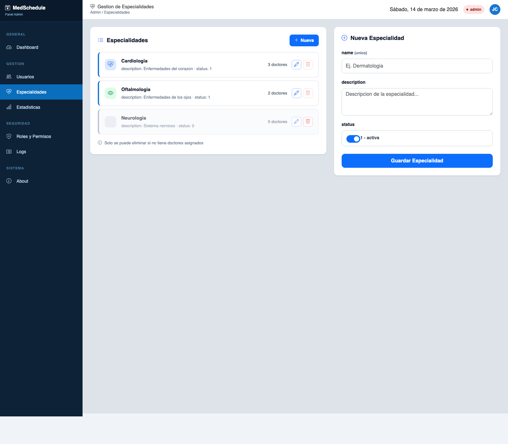
Figura 2. Vista de CRUD de especialidades medicas relacionada con el issue #36.
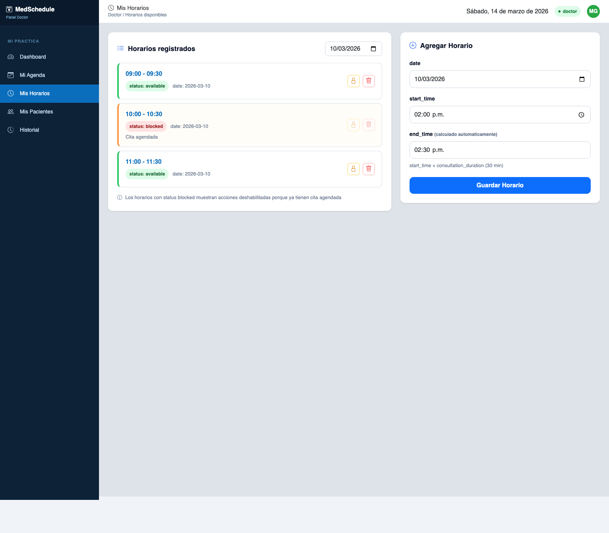
Figura 3. Vista de gestion de horarios del doctor relacionada con el issue #37.
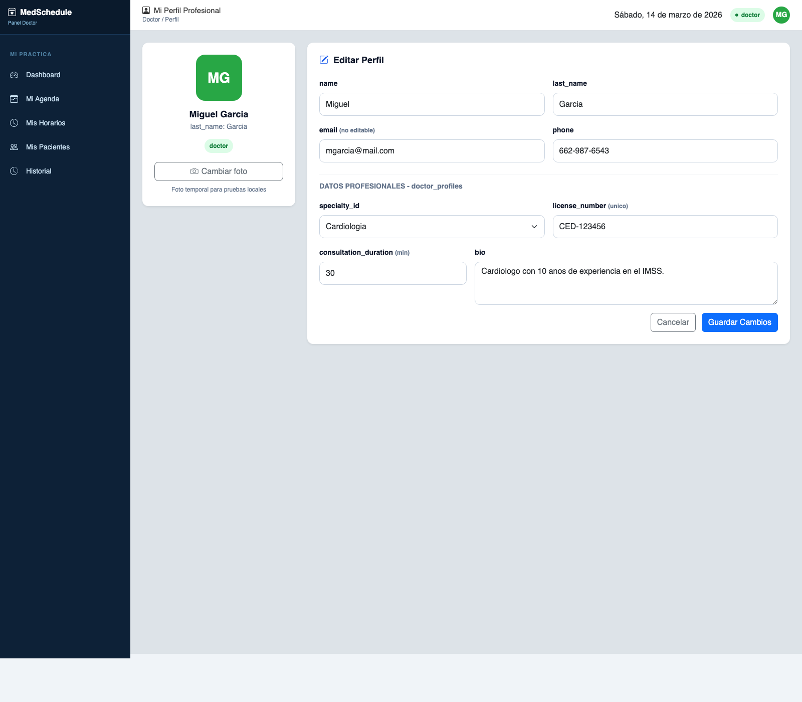
Figura 4. Vista de perfil profesional del doctor relacionada con el issue #40.
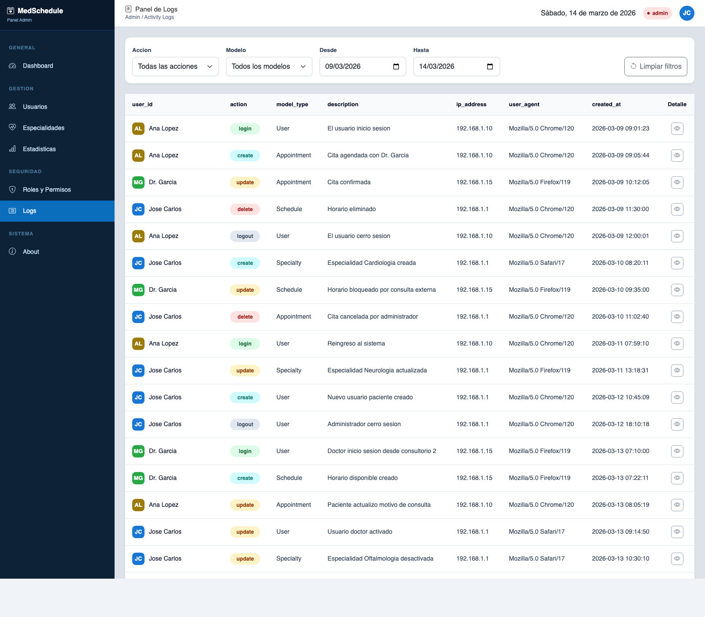
Figura 5. Vista del panel de logs de actividad relacionada con el issue #42.
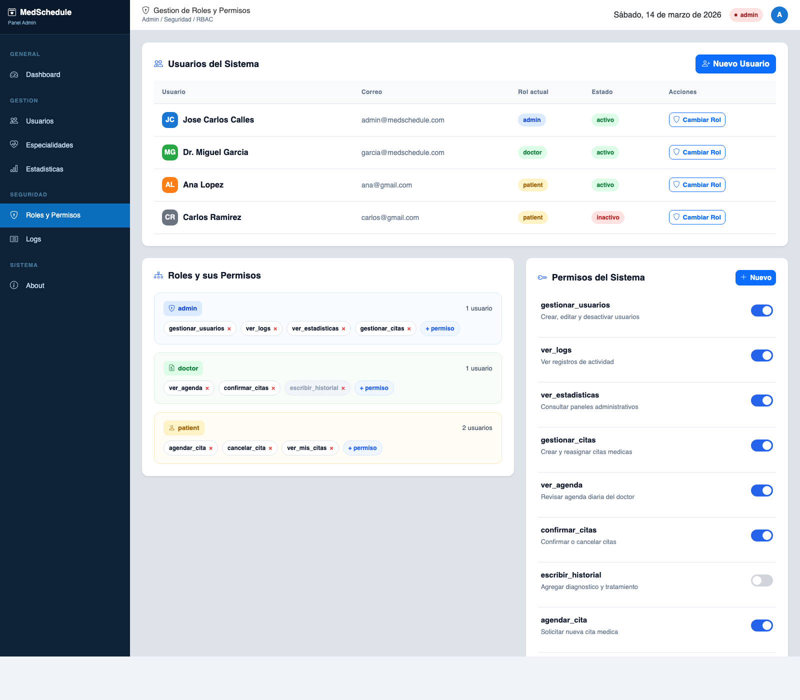
Figura 6. Vista de gestion de roles y permisos RBAC relacionada con el issue #21.
4.3 Capturas complementarias del sistema
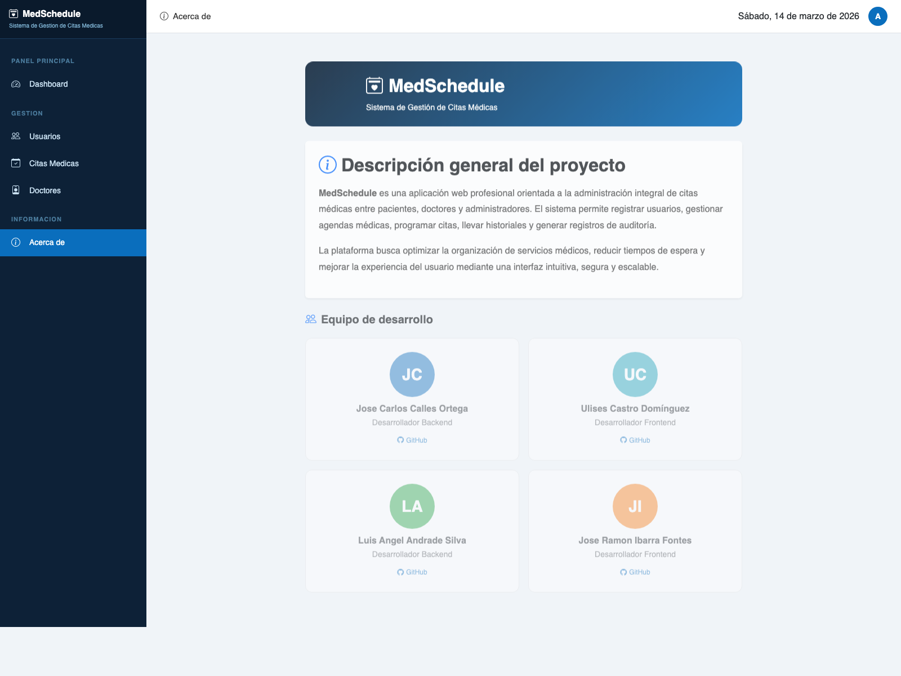
Figura 7. Pantalla About del sistema.
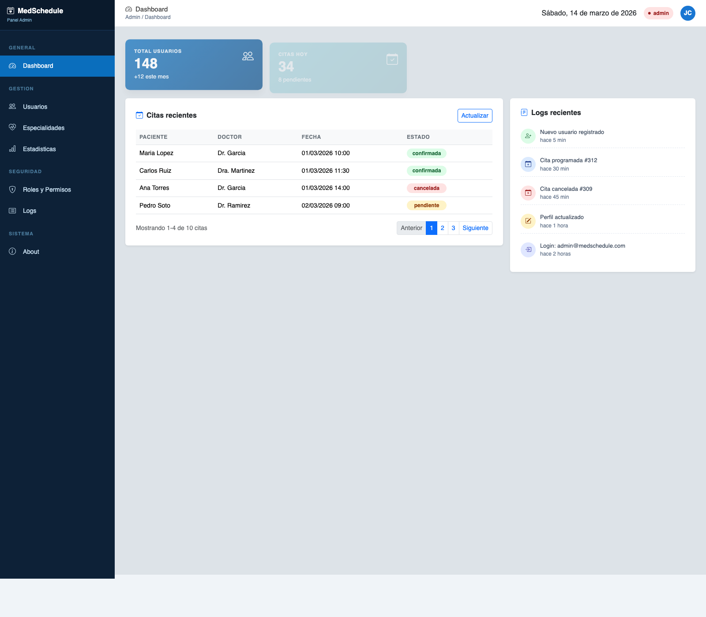
Figura 8. Dashboard administrativo del sistema.
5. Pull Request / Merge Request por integrante
Se deben presentar obligatoriamente al menos dos tickets por integrante, mostrando el Pull Request o Merge Request completo, la rama, la descripcion de la tarjeta, la revision y la funcionalidad desarrollada mediante vertical slice.
5.1 Formato sugerido por Pull Request
Integrante: [Nombre]
Ticket / tarjeta: [#___]
Rama: [feature/___]
PR / MR: [#___]
Descripcion suficiente: [Que problema resuelve y que entrego]
Archivos principales modificados: [Lista breve]
Evidencia de code review / aprobacion: [Captura o URL]
Demo de la funcionalidad: [Captura, video o URL]
Issues ya relacionados con los desarrollos visibles en esta entrega: #21, #26, #36, #37, #40, #42.
5.2 PR obligatorio 1
[Completar con la informacion del primer ticket del integrante]
5.3 PR obligatorio 2
[Completar con la informacion del segundo ticket del integrante]
7. Sistema de logueo, registro y reseteo de password
El sistema debe contar con flujo de autenticacion, registro y validacion de autenticidad mediante PIN enviado por correo electronico, asi como reseteo de password. Esta seccion debe documentar las pantallas, flujo y evidencia del proceso.
Pantallas incluidas: login, registro, verificacion por PIN, forgot password, reset password.
Campos minimos: email, password, confirmacion, PIN de verificacion.
Evidencia: capturas del correo, captura del formulario, captura del reseteo exitoso.
Tickets relacionados: [#___, #___]
8. Rol de Superadministrador: CRUD de usuarios y panel de logs
El rol de superadministrador debe demostrar control total sobre usuarios registrados y contar con panel de logs para registrar acciones relevantes como logueo, deslogueo, navegacion y procesos criticos.
CRUD de usuarios: alta, consulta, edicion, cambio de estado o eliminacion segun reglas del sistema.
Panel de logs: usuario, fecha, accion, modulo o proceso relevante.
Evidencia: capturas del CRUD y del panel de logs funcionando.
Tickets relacionados: #42 Panel de logs de actividad y #21 Gestion de roles y permisos RBAC.
9. Actualizacion de perfiles de usuario
Cada usuario registrado debe poder actualizar al menos su nombre y cargar una fotografia de perfil. Esta seccion debe incluir la evidencia de la carga de imagen y del cambio de datos reflejado en la interfaz.
Campos minimos editables: nombre, telefono, fotografia.
Restricciones sugeridas: formato de telefono, tipo y peso maximo de imagen.
Evidencia: antes y despues del cambio de perfil.
Ticket relacionado: #40 Perfil profesional del doctor.
10. Issue de implementacion RBAC con UI
Debe existir un issue especifico para Role-Based Access Control y una interfaz administrativa para gestionar usuarios, roles y permisos con buenas practicas de separacion de responsabilidades, legibilidad y trazabilidad.
Roles minimos: admin, doctor, patient.
Permisos documentados: [Lista de permisos clave]
UI de administracion: asignacion de roles, visualizacion de permisos, alta y baja logica si aplica.
Buenas practicas usadas: [Repository / Services / Validators / Controllers delgados / otros]
Issue base: #21 - implementar UI de gestion de roles y permisos RBAC
11. Funcionalidades principales adicionales de entrada y salida
Ademas de los requerimientos obligatorios, el sistema debe presentar al menos una funcionalidad de entrada y una de salida propias del caso de estudio.
11.1 Funcionalidad principal de entrada
Nombre: agenda medica y gestion de horarios del doctor.
Tickets relacionados: #26 y #37.
Entradas capturadas: fecha, hora de inicio, hora de fin calculada, paciente, especialidad y motivo.
Reglas de validacion: cambios de estatus, horarios bloqueados visibles, calculo automatico de end_time y filtros por fecha.
11.2 Funcionalidad principal de salida
Nombre: panel de logs de actividad y panel RBAC administrativo.
Tickets relacionados: #42 y #21.
Datos mostrados: usuario, accion, modelo, descripcion, IP, user agent, fecha, roles y permisos asignados.
Criterio de exito: demostrar consulta, filtros, detalle JSON, cambio de rol y actualizacion visual de permisos.
12. Grafica o chart con datos reales de DB
Se debe agregar una funcionalidad con grafica para el superadministrador o cualquier chart que refleje informacion real de la base de datos. La recomendacion es mostrar usuarios registrados por fecha, citas por estatus o actividad por periodo.
Tipo de grafica: [Line / Bar / Pie / Area]
Fuente de datos: [Tabla o consulta]
Rango de fechas: [Periodo]
Evidencia: captura de la grafica y ticket relacionado.
13. Busqueda con debounce y campo dependiente en tiempo real
Se debe mostrar al menos una captura y explicacion de una busqueda con debounce y de un campo dependiente que reaccione en tiempo real, como combos dependientes, switches o filtros conectados a datos dinamicos.
Campo de busqueda: [Nombre del modulo]
Tiempo de debounce: [ms]
Campo dependiente: [Combo / switch / select enlazado]
Evidencia: capturas del comportamiento en tiempo real.
14. Pruebas unitarias, pruebas automaticas y code coverage
Por cada issue obligatorio de cada integrante se debe presentar al menos una prueba unitaria de frontend, una prueba unitaria de backend y una evidencia de automatizacion con Selenium IDE. En esta entrega se deja evidencia automatica real con Playwright para E2E y con PHPUnit/Laravel para pruebas unitarias y feature del backend.
14.1 Evidencia detallada de pruebas E2E
Herramienta ejecutada: Playwright.
Comando utilizado: npx playwright test
Base URL probada: http://127.0.0.1:8000
Archivo de pruebas: /tmp/medschedule-e2e-doc/tests/medschedule.spec.js
Casos ejecutados:
- about page smoke: valida visibilidad de about-hero y about-stack.
- dashboard admin smoke: valida KPIs y panel de logs del dashboard.
- doctor agenda smoke: valida estadisticos y panel principal de la agenda del doctor.
Resultado observado: 3 pruebas aprobadas de 3 en 3.4s.
Archivos de evidencia generados:
- Reporte HTML: docs/assets/e2e/playwright-report/index.html
- Salida de consola: docs/assets/e2e/playwright-output.txt
- Resumen visual: docs/assets/e2e/playwright-summary.png
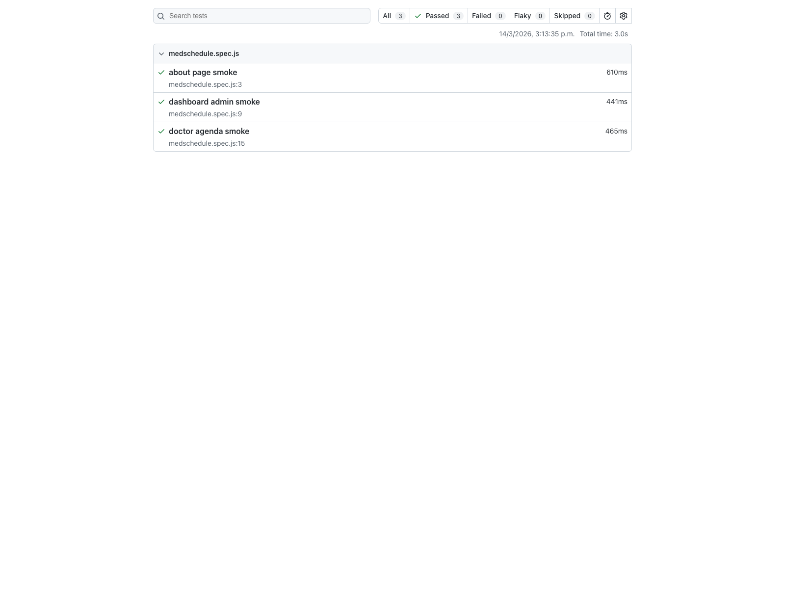
Figura 9. Reporte HTML de Playwright con las pruebas E2E ejecutadas.
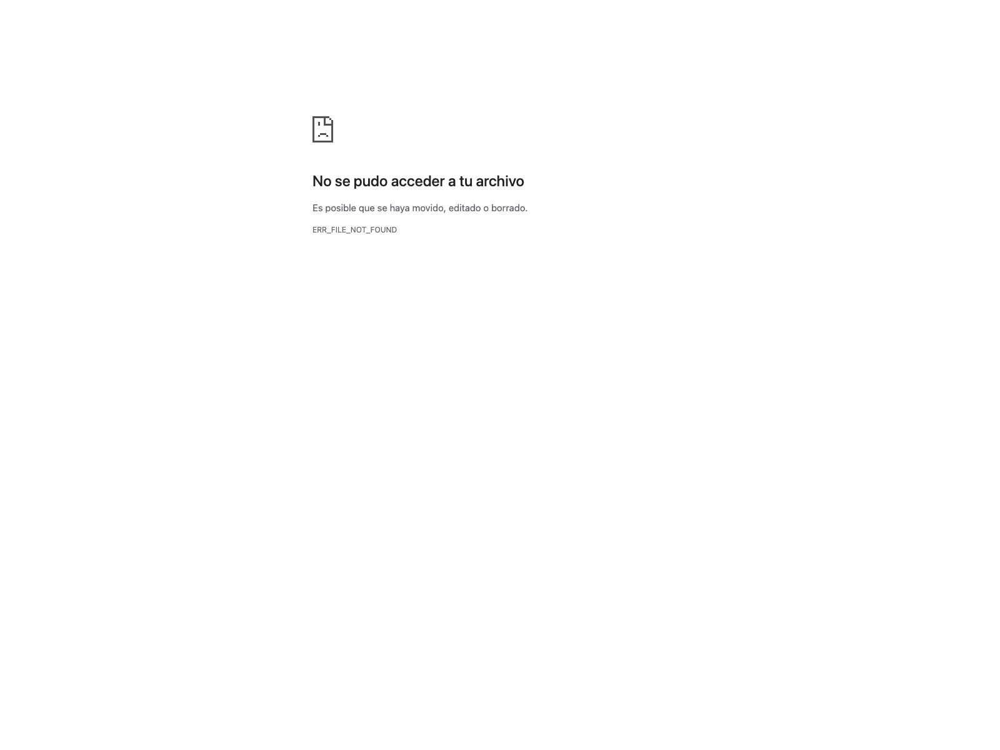
Figura 10. Salida resumida de consola de la corrida E2E.
14.2 Pruebas unitarias y feature del backend
Herramienta ejecutada: PHPUnit mediante php artisan test.
Resultado observado: 15 pruebas aprobadas y 349 assertions.
Archivos de prueba agregados para esta entrega:
- tests/Unit/EnsureAdminRoleTest.php: valida acceso permitido para admin y rechazo 403 para usuarios sin rol admin.
- tests/Feature/AppointmentControllerTest.php: valida carga de agenda y confirmacion de cita pendiente.
- tests/Feature/ScheduleControllerTest.php: valida calculo de end_time y restriccion de borrado en horarios bloqueados.
- tests/Feature/DoctorProfileControllerTest.php: valida licencia unica y actualizacion de foto de perfil.
- tests/Feature/SpecialtyControllerTest.php: valida nombre unico y bloqueo de eliminacion con doctores asignados.
- tests/Feature/ActivityLogControllerTest.php: valida filtros y estructura del payload de logs.
- tests/Feature/AdminRbacAccessTest.php: valida acceso correcto y restriccion del panel RBAC.
Archivo de evidencia generado: docs/assets/unit-phpunit-output.txt
Resumen visual generado: docs/assets/unit/phpunit-summary.png
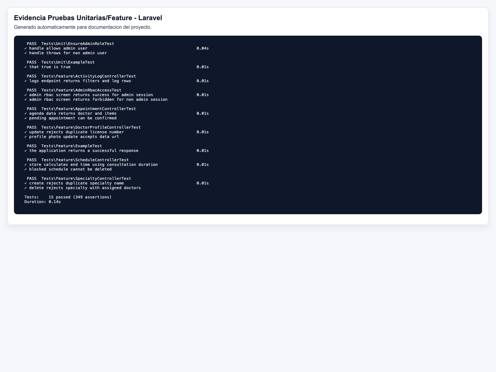
Figura 11. Evidencia visual de la ejecucion de pruebas unitarias y feature con Laravel.
14.3 Matriz resumida por issue cubierto
Issue #21 RBAC: cubierto por EnsureAdminRoleTest y AdminRbacAccessTest.
Issue #26 Agenda del doctor: cubierto por AppointmentControllerTest y por la suite E2E Playwright.
Issue #36 Especialidades medicas: cubierto por SpecialtyControllerTest.
Issue #37 Horarios del doctor: cubierto por ScheduleControllerTest.
Issue #40 Perfil profesional del doctor: cubierto por DoctorProfileControllerTest.
Issue #42 Panel de logs: cubierto por ActivityLogControllerTest.
14.4 Cobertura
Herramienta disponible en backend: PHPUnit. En esta evidencia se documenta la ejecucion de suites reales, pero no se genero reporte HTML de code coverage dentro del proyecto actual.
Pendiente recomendado: habilitar Xdebug o PCOV y generar --coverage-html docs/coverage para cerrar completamente el apartado de cobertura.
15. Tag de release estable y URL del repositorio
La liberacion debe incluir un tag en GitHub de la version estable y la URL del repositorio donde pueda verificarse dicha release.
Repositorio: [https://github.com/usuario/repositorio]
Tag de release: [v1.0.0]
Fecha de creacion del tag: [dd/mm/aaaa]
Notas de la version: [Resumen de cambios incluidos]
16. CI/CD con GitHub Actions o Jenkins
El repositorio debe incluir al menos un issue o ticket de CI/CD y la evidencia del pipeline ejecutando tareas como linting, prettier, unit testing, conventional commits o deploy. Tambien se debe incluir evidencia de excepciones o fallos cuando el pipeline no pasa.
Issue / ticket de CI/CD: [#___]
Herramienta elegida: [GitHub Actions / Jenkins]
Workflow o job implementado: [Nombre]
Evidencia de exito: [Captura del pipeline en verde]
Evidencia de error: [Captura del pipeline fallando y razon]
16.1 Ejemplo minimo de workflow
jobs:
lint-format:
runs-on: ubuntu-latest
steps:
- name: Checkout code
uses: actions/checkout@v4
- name: Set up Node.js
uses: actions/setup-node@v4
with:
node-version: "20"
- name: Install dependencies
run: npm ci
- name: Run ESLint 1
run: npx eslint . --ext .js,.vue --fix
- name: Run Prettier 2
run: npx prettier --write "**/*.{js,vue,json,css,scss}"
- name: unit-testing for js 3
run: npm test
17. Conclusiones, expansion, recomendaciones y problemas
El documento debe cerrar con conclusiones por equipo, sugerencias de expansion del sistema, recomendaciones tecnicas, problemas encontrados durante el desarrollo y una lista de futuros tickets etiquetados como TODO dentro del repositorio, preferentemente en la carpeta /docs.
17.1 Conclusiones
[Resumen del aprendizaje tecnico, organizacion del equipo y estado del sistema]
17.2 Sugerencias de expansion
TODO 1: [Nueva funcionalidad]
TODO 2: [Mejora de arquitectura, rendimiento o seguridad]
17.3 Recomendaciones
[Buenas practicas, ajustes de infraestructura, estrategia de pruebas, monitoreo, backups]
17.4 Problemas encontrados
Ticket / problema: [Descripcion del obstaculo tecnico y como se resolvio o se mitigara]
Nota final: este documento mantiene el mismo nivel de evaluacion de las unidades anteriores, por lo que cada seccion debe cerrarse con evidencia verificable, capturas suficientes, URLs, tickets relacionados y demostracion funcional del sistema.